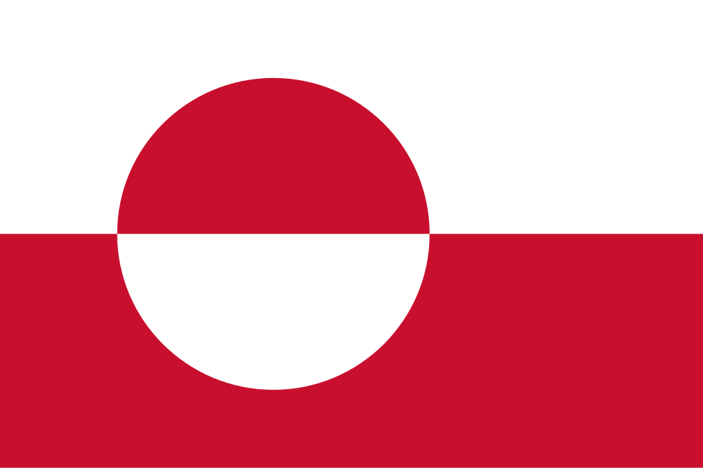

Groenlândia
 A Groenlândia, oficialmente denominada Kalaallit Nunaat, é a maior ilha do mundo, localizada entre o Oceano Atlântico e o Oceano Ártico, pertencente politicamente à Dinamarca como um território autônomo. Com cerca de 2,16 milhões de km², a Groenlândia é predominantemente coberta por uma imensa camada de gelo que cobre aproximadamente 80% de seu território, tornando a densidade populacional extremamente baixa, com pouco mais de 56 mil habitantes. A população é majoritariamente composta por inuit e descendentes de europeus, refletindo uma herança cultural mista. A capital, Nuuk, concentra grande parte da população, funcionando como centro político, econômico e cultural. A Groenlândia possui importância geopolítica estratégica devido às suas reservas de recursos minerais, petróleo e gás, além de seu papel crítico nos estudos sobre mudanças climáticas, devido à vulnerabilidade de sua camada de gelo ao aquecimento global.
História
A história da Groenlândia é marcada pela presença dos povos indígenas inuítes, que habitaram a ilha por milhares de anos, desenvolvendo técnicas adaptadas ao frio extremo, como caça a focas, pesca e construção de iglus. Por volta do século X, exploradores nórdicos liderados por Erik, o Vermelho, colonizaram partes da costa sul, estabelecendo assentamentos que duraram vários séculos, até desaparecerem devido a fatores climáticos e conflitos com populações locais. Durante séculos, a Groenlândia permaneceu relativamente isolada, sendo mapeada e explorada apenas esporadicamente por europeus, principalmente dinamarqueses e noruegueses.
No século XVIII, a Dinamarca-Noruega consolidou sua presença na ilha, iniciando a administração colonial e atividades missionárias cristãs, que moldaram a cultura e religião locais. Em 1953, a Groenlândia tornou-se parte integrante da Dinamarca, e em 1979 recebeu autonomia interna, com o estabelecimento do governo local (Home Rule), ampliada em 2009 com maior controle sobre recursos naturais e legislação interna. A história recente também é marcada por negociações sobre independência e preservação cultural, refletindo o desejo de manter a identidade inuit enquanto integra o território à esfera dinamarquesa.
Cultura
A cultura da Groenlândia é profundamente ligada ao meio ambiente ártico e às tradições inuítes, com grande valorização da caça, pesca e artesanato local. A mitologia, música, dança e narrativas orais são elementos essenciais da identidade cultural, transmitidos de geração em geração. O idioma oficial é o groenlandês (Kalaallisut), amplamente falado, enquanto o dinamarquês é usado em contextos administrativos e educacionais. As festividades tradicionais, como o National Day em 21 de junho, celebram a herança cultural e a história do povo inuit, promovendo eventos comunitários, música, esportes e danças típicas.
O artesanato, especialmente esculturas em osso, marfim e pedra, além de roupas de pele e cerâmica, reflete a criatividade adaptativa às condições extremas do Ártico. A culinária inclui pratos tradicionais como carne de foca, peixe, baleia e carne de rena, preservando métodos de conservação e preparação ancestrais. A cultura visual e literária contemporânea também floresce, com artistas e escritores explorando temas de identidade, mudanças climáticas e vida no Ártico. A arquitetura é adaptada ao clima extremo, com edifícios erguidos para suportar temperaturas abaixo de zero e ventos fortes, especialmente em cidades costeiras como Nuuk e Sisimiut.


Clima
A Groenlândia apresenta um clima predominantemente ártico, com longos invernos extremamente frios, verões curtos e temperaturas médias que variam drasticamente entre o litoral e o interior coberto por gelo. Nas regiões costeiras, o clima pode ser relativamente ameno durante o verão, permitindo a existência de flora limitada e atividades humanas. Já no interior, as temperaturas podem cair abaixo de -50°C no inverno, com ventos fortes e condições severas de neve e gelo. O clima influencia a distribuição populacional, concentrando moradores nas regiões costeiras e limitando a ocupação do vasto interior gelado.
Biodiversidade
A biodiversidade da Groenlândia é adaptada ao clima extremo, incluindo espécies árticas de mamíferos, aves e plantas. Entre os mamíferos destacam-se ursos-polares, renas, morsas, focas e baleias, enquanto a fauna avícola inclui aves migratórias e aves marinhas costeiras. A flora é limitada a tundras e plantas resistentes ao frio, como musgos, líquens e pequenas flores adaptadas ao solo gelado. Os ecossistemas costeiros e marinhos são ricos em vida aquática, incluindo peixes e crustáceos, sendo fundamentais para a subsistência das comunidades inuítes e para a pesquisa científica internacional.
O país possui áreas protegidas, como o Parque Nacional do Nordeste da Groenlândia, que visam conservar espécies ameaçadas e habitats frágeis. Mudanças climáticas representam uma ameaça significativa à biodiversidade local, com derretimento de gelo, alterações nos habitats e impacto sobre espécies dependentes de gelo marinho. Programas de monitoramento e conservação buscam preservar o equilíbrio ecológico e proteger os recursos naturais da ilha para as gerações futuras.

Cidades
As cidades da Groenlândia são pequenas e distribuídas principalmente ao longo da costa, refletindo as condições extremas e a presença da camada de gelo no interior. Nuuk, a capital, é o maior centro urbano, concentrando administração, educação, comércio e cultura. Outras cidades importantes incluem Sisimiut, Ilulissat e Qaqortoq, que funcionam como centros regionais, oferecendo serviços básicos, infraestrutura portuária e atividades econômicas voltadas à pesca e turismo. As cidades combinam arquitetura adaptada ao frio extremo, com edifícios elevados e isolados, e preservam tradições culturais locais.
As cidades groenlandesas são essenciais para a manutenção da vida social, econômica e política, conectando comunidades dispersas, promovendo comércio local e permitindo a preservação da cultura inuit. O planejamento urbano prioriza sustentabilidade, proteção ambiental e adaptação às mudanças climáticas, garantindo que as populações continuem a habitar regiões costeiras de maneira segura e funcional, enquanto o interior permanece quase inabitável devido à cobertura glacial.